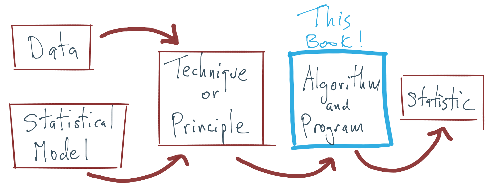

1 Introduction
The journey from statistical model to useful output has many steps, most of which are taught in other books and courses. The purpose of this book is to focus on one particular aspect of this journey: the development and implementation of statistical algorithms.

Figure 1.1: The process of statistical modeling.